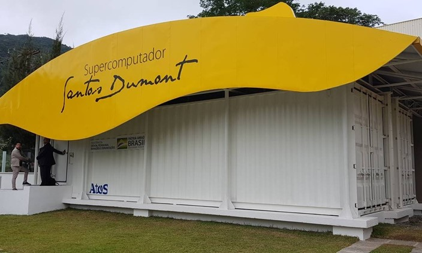

Super computador ajudará no combate ao covid-19

O Laboratório Nacional de Computação Científica (LNCC) anunciou que está disponibilizando gratuitamente o supercomputador Santos Dummont e seus recursos de processamento paralelizado a todos os pesquisadores e cientistas que trabalham em soluções que possam ajudar a conter a disseminação do novo coronavírus. Adicionalmente, o LNCC também está cedendo o acesso gratuito (por 90 dias) ao software Parabricks, da Nvidia, que usa GPUs para analisar o genoma 50 vezes mais rápido do que se fosse de servidor a servidor. O software é capaz de reduzir o tempo de análise de um genoma humano inteiro de dois dias para menos de uma hora. Essa agilidade é imprescindível neste momento, em que o contágio por covid-19 tem crescido substancialmente. Na corrida para desenvolver um medicamento ou vacina, um dia a menos pode representar a salvação de milhares de vidas. O Laboratório Nacional de Computação Científica (LNCC) anunciou que está disponibilizando gratuitamente o supercomputador Santos Dummont e seus recursos de processamento paralelizado a todos os pesquisadores e cientistas que trabalham em soluções que possam ajudar a conter a disseminação do novo coronavírus. Adicionalmente, o LNCC também está cedendo o acesso gratuito (por 90 dias) ao software Parabricks, da Nvidia, que usa GPUs para analisar o genoma 50 vezes mais rápido do que se fosse de servidor a servidor. O software é capaz de reduzir o tempo de análise de um genoma humano inteiro de dois dias para menos de uma hora. Essa agilidade é imprescindível neste momento, em que o contágio por covid-19 tem crescido substancialmente. Na corrida para desenvolver um medicamento ou vacina, um dia a menos pode representar a salvação de milhares de vidas.
O Santos Dummont está localizado em Petrópolis, no Rio de Janeiro, e é o mais poderoso supercomputador da América Latina, contando com 5,1 petaflops de poder computacional (5,1 quadrilhões de operações por segundo). Essa capacidade foi alcançada após a máquina receber um upgrade em dezembro de 2019, quando foram instaladas 376 GPUs Nvidia Tesla V100. Atualmente, a máquina está envolvida em cerca de 150 projetos de pesquisas nas áreas de exploração de petróleo e gás, carvão mineral e energias renováveis, desenvolvimento de fármacos para HIV, estudos sobre clima, e pesquisas dos vírus da ZIKA, Dengue, e, atualmente, também do novo coronavírus. O supercomputador será usado no processamento de exomas e genoma humanos e genomas da covid-19, para a análise de variantes nas amostras de DNA de pacientes e do vírus, a fim de mapear o comportamento da doença em diferentes indivíduos e elaborar novas estratégias para barrar o contágio.